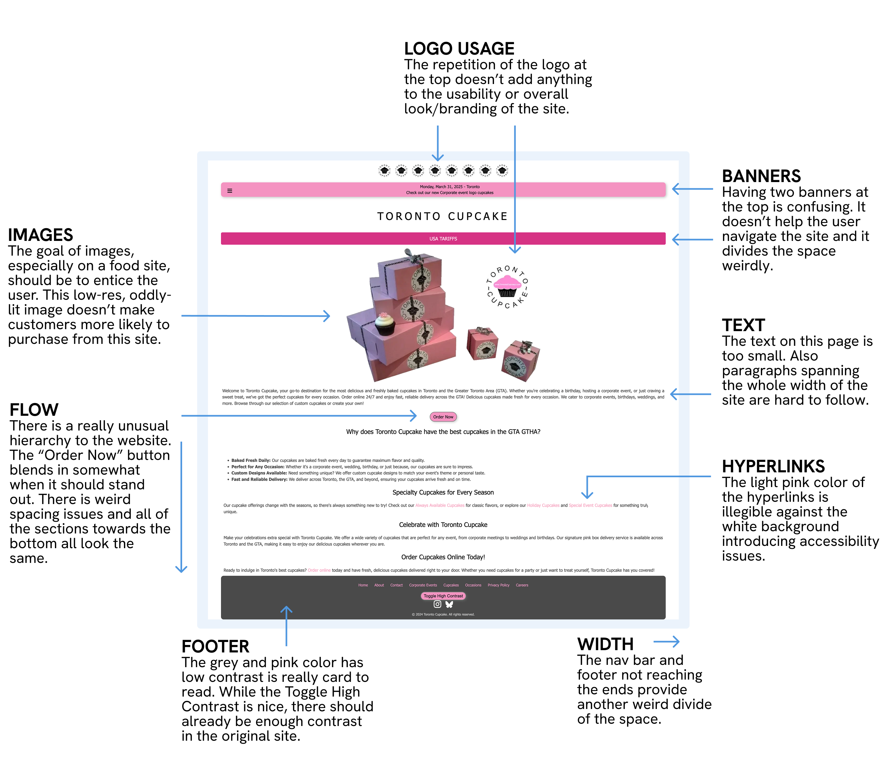
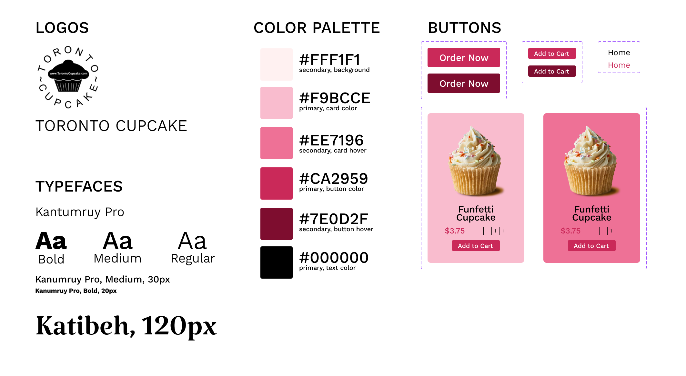

Reponsive Redesign
For this project I had to redesign an existing webpage with considerable user or accessibility issues. I decided redesign the Toronto Cupcakes's website. Toronto Cupcakes is a bakery/catering service in Toronto from whom customers can buy and order cupcakes. Currently, it is hard to determine what the company does upon first glance of their website. My redesign adresses the issues with the current website and creates a stronger brand image for the company.
Toronto Cupcakes is a cupcakes services that offers online ordering, delivery, and catering of specialty cupcakes in the Greater Toronto Area. Its homepage is the place where customers will first go to understand the brand and potentially order cupcakes. It should emphasize its unique features like delivery, specialty cupcakes, and custom designs and make it easy for customers to place their order as quickly as possible.
While I think the goal of the website should be to efficiently point users to a place where they can order an checkout, the current website doesn't do that effectively. Not only is it hard to navigate, but the small text and low-contrast choice of colors makes it inaccessible for some users as well. WebAIM found 23 issues of low-contrant colors mainly in the hyperlinks and footer.
Design an interface that attracts the attention of users and focuses it to drive purchases
When designing the Virtual Style Guide it was important for me to consider the color palette of the original website. Specifically, I found the pinks to be a good starting point to build of off. I also did not want to change the logo since that is essential to the brand. While, I also kept a similar sans-serif font for smaller text, I introduced a more embellished serif text to introduce some variance. Additionally, all of the text is much larger and easier to read. The buttons stand out more and the colors for hyperlinked text is deeper to fix some of the previously mentioned accessibility issues.
While I think the goal of the website should be to efficiently point users to a place where they can order an checkout, the current website doesn't do that effectively. Not only is it hard to navigate, but the small text and low-contrast choice of colors makes it inaccessible for some users as well.
The result is a responsive design that has consistent branding, purpose across the whole page, and addresses the accessibility concerns. Check out the final webpage here.
This project helped me understand how important accessibility is for projects. Not only does a webpage have to be beautiful, but it should be easy to navigate for all ranges of people across many devices. Just because something is legible on your computer, doesn't mean it will translate well onto a phone or tablet. While this project made me incredibly hungry, it was also really fun to design and code.